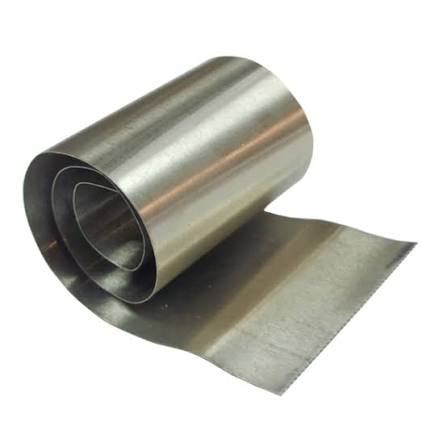
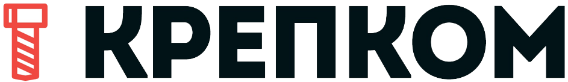

Нейзильбер
Сплав цветных металлов, состоящий из трех основных компонентов: меди, никеля и цинка.

Материалы для DIY и проффесианальных задач.

Сплав цветных металлов, состоящий из трех основных компонентов: меди, никеля и цинка.
Латунь (в т.ч. ЛС63)
Титан (в т.ч. ВТ1-0)
Медь (в т.ч. М1М и М1Т)
Никель и сплавы никеля
Нерж (ограничено)
Олово
Свинец
Благородные металлы
Мельхиор
Нейзильбер
Магний
Алюминий (в т.ч. дюраль (Д16Т и АМг2Т))
Цинк
Кадмий
Состав: Медь (Cu): 50–65% (основа сплава, придает пластичность). Никель (Ni): 5–35% (в советской марке МНЦ15-20 — около 13,5–16,5%). Обеспечивает серебристый цвет и коррозионную стойкость. Цинк (Zn): 13–45% (в МНЦ15-20 — 18–22%). Придает твердость.
Свойства:
Цвет и внешний вид: Серебристо-белый с легким синеватым или зеленоватым отливом, внешне очень похож на серебро.
Прочность и твердость: Высокая прочность на разрыв, жесткость и упругость (превосходит чистое серебро и мельхиор).
Коррозионная стойкость: Не ржавеет, не темнеет на воздухе и не окисляется от контакта с кожей.
Плотность и вес: Плотность составляет 8,1–8,7 г/см³ (немного легче серебра).
Технологичность: Хорошо поддается обработке как в холодном, так и в нагретом виде (ковке, штамповке, прокатке, пайке).
Стоимость: Дешевле мельхиора из-за добавления более дешевого цинка
Применение: Ювелирное дело и бижутерия: Изготовление колец, оправы для камней, украшений в технике Wire Wrap (плетение из проволоки).
Столовые приборы и посуда: Ложки, вилки, подстаканники (часто покрываются слоем технического серебра).
Ножевое производство: Создание элементов рукоятей — больстеров, притин, накладок и тыльников.
Музыкальные инструменты: Производство ладов для гитар, струн, а также частей духовых инструментов (например, флейт).
Точное приборостроение и медицина: Изготовление медицинских инструментов, деталей точных приборов, арматуры и заклепок.
Награды и сувениры: Монеты, медали, значки, филигранные и чеканные изделия
Плотность - около 8700 кг/м³.
Температура плавления - 900–1050 °C.
Электрическая проводимость: до 22 раз хуже меди.
Теплопроводность - от 15 до 30 Вт/(м·К) при комнатной температуре.
Хорошая коррозионная стойкость.